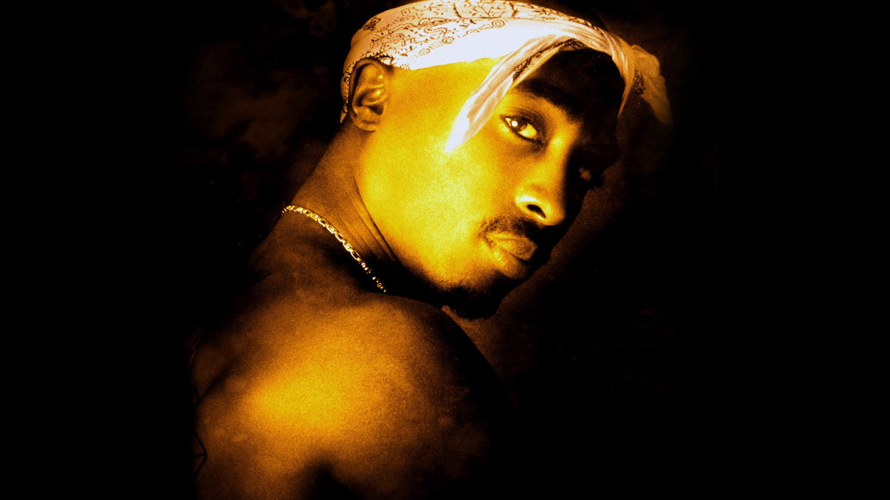
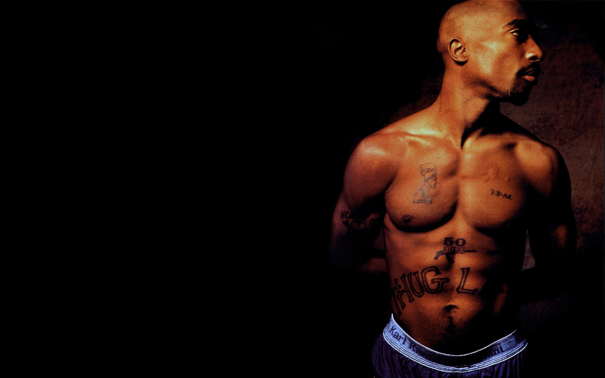
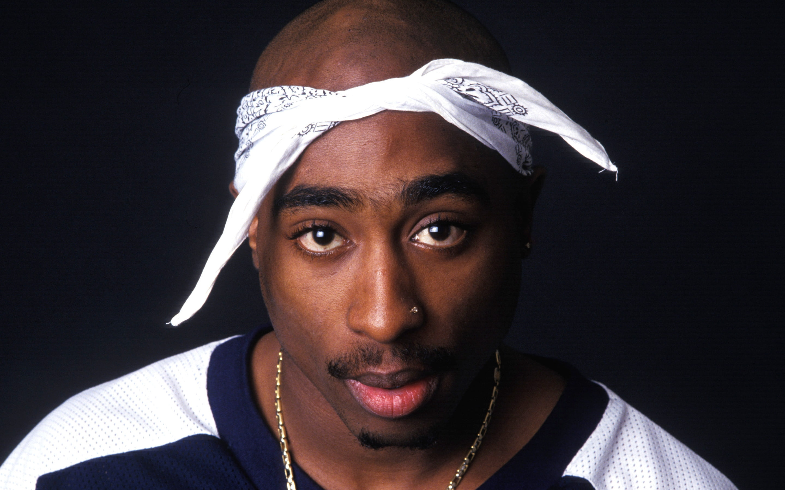
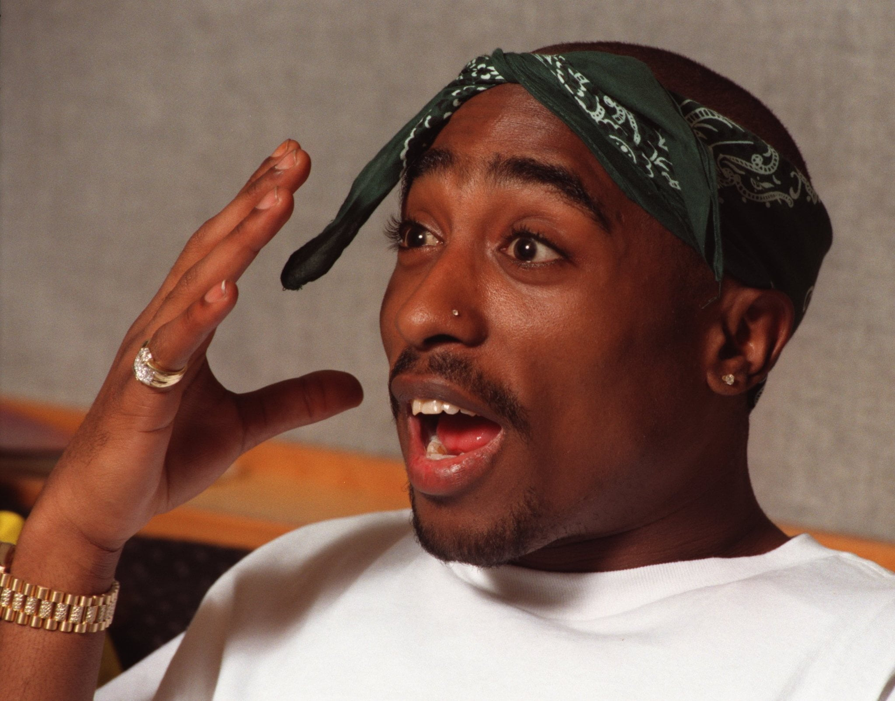
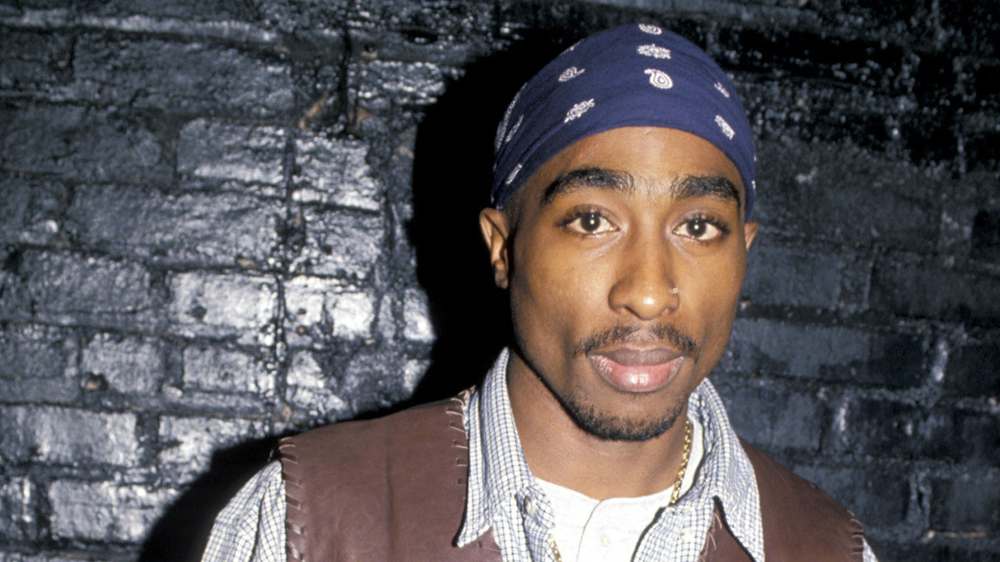

Tupac Shakur, também conhecido como 2Pac, foi um rapper americano de grande influência na década de 90. Ele nasceu em 1971 em Nova York e cresceu em meio à pobreza e violência. Tupac vendeu mais de 75 milhões de discos em todo o mundo e foi indicado ao Grammy diversas vezes. Ele faleceu em 1996, aos 25 anos, após ser baleado em Las Vegas. Sua morte é rodeada por controvérsias e teorias conspiratórias. Tupac é lembrado como um dos maiores artistas do hip hop de todos os tempos.